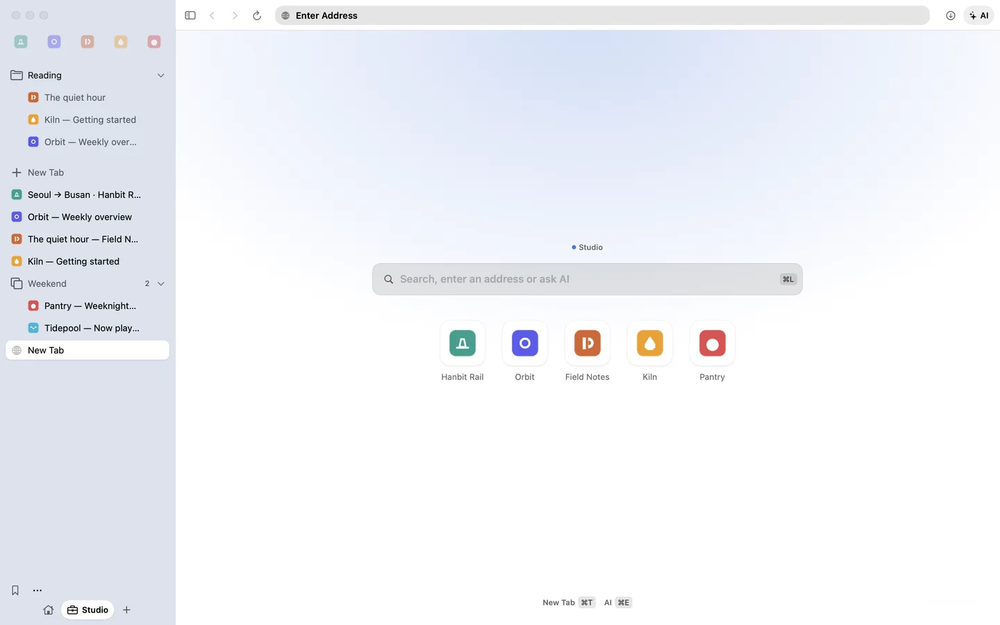
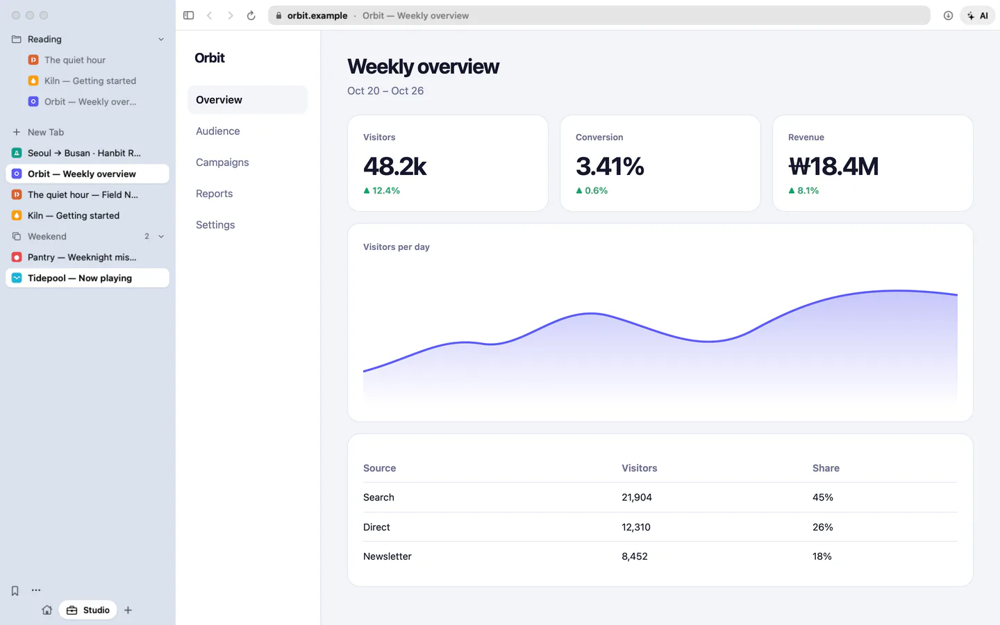
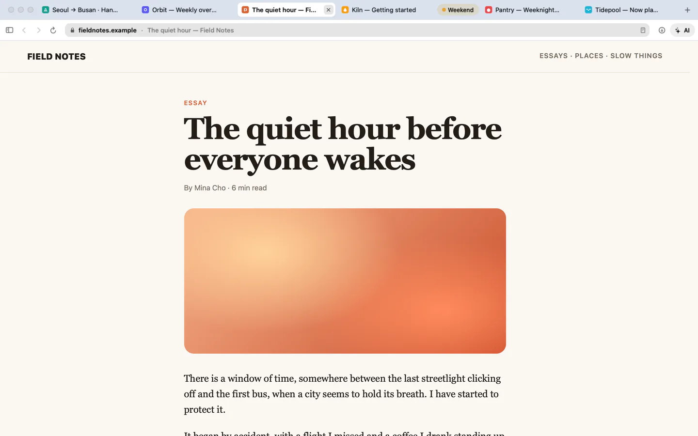
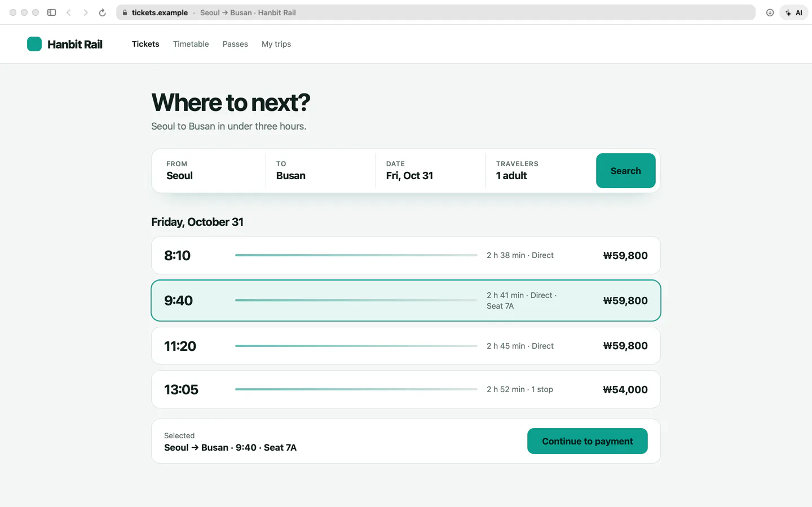

Tabs on the side, the page large.
A light Mac browser that an AI can use. It runs on the WebKit already in macOS, so the download is about 7 MB and the app about 22 MB. Free and open source (MIT).
brew install --cask namekun/tap/changmunVersion 0.14.5 · macOS 14 or later · Apple silicon only · Signed and notarized by Apple

The start page: your favorites, and a search field that can also ask the AI.
Tabs where you want them.
The sidebar is the default. Prefer a strip of tabs along the top? That is one setting.

Sidebar
Favorites, bookmark folders and vertical tabs share one column.

Along the top
Favorites first, then the tabs in a strip.

Just the page
Hide the sidebar and the page takes the whole window.
A browser your AI can use.
The panel (⌘E) runs on the claude CLI you already have, so it uses your Claude Code subscription. It reads pages, clicks and types, and asks before anything risky. Passwords stay off limits.
- Read the page
- Type “Busan”
- Click “Fri 9:40”
- Open pay.example
The AI wants to open pay.example, which you haven’t visited.
The panel stops to ask before it opens an address you have not visited.
Agents such as Claude Code get the same tools over MCP and the changmun command. Headless mode runs it off screen, with a profile of its own.
$changmun headless start$changmun --headless open example.com$changmun --headless read$claude mcp add changmun -- /Applications/Changmun.app/Contents/MacOS/Changmun --mcpThere is not much to carry.
Changmun runs on the WebKit already in macOS, so it brings no engine of its own.
- About 7 MBto download. On disk the app takes about 22 MB.
- WebKitThe engine in macOS and Safari. Security fixes arrive with macOS.
- SwiftNative, not a wrapper around a web page.
- No accountNo server and no analytics either.
And the smaller things.
Each one is in the app today. The guide covers the rest.
Reader mode
Strips an article down to clean text over the page. ⇧⌘R.
Page translation
Translates in place with ⌥⌘T, on your Mac by default (macOS 26 or later) or with Claude if you choose it.
Keep translating a site
Turn it on for a site and its next pages are translated as they open.
Picture in picture
A video stays in view after you leave its tab. ⌃⌘P.
Spaces
Separate tabs and favorites for work and home, on ⌃1 to 9. A profile keeps cookies apart too.
Extensions
Safari extensions, and ones from the Chrome Web Store, on macOS 15.4 or later.
Ad blocking
EasyList and EasyPrivacy, refreshed on their own.
Import
Bring bookmarks and history from Chrome, Arc, Safari and other browsers.
Private windows
Cookies and site data stay in memory and are forgotten when you close the window.
Passwords
Saved in the Keychain, and filled after Touch ID or your Mac password.
Focus mode
Hides everything but the page. ⌘⇧F.
Open source
MIT licensed, so anyone can read the code and check what it does.
A few questions.
Short answers. The guide has the long ones.
Which engine does it use?
WebKit, the engine in macOS and Safari. It is not Chromium, so a site built only for Chromium can misbehave here, as in Safari.
Is it free?
Yes. It is open source under the MIT license and needs no account.
Which Macs does it run on?
Apple silicon Macs with macOS 14 or later. Extensions need macOS 15.4, and translation on your Mac needs macOS 26.
Can I bring my bookmarks and passwords?
Yes, on first launch or from the menu. Bookmarks and history come from Safari and Chromium browsers such as Chrome, Arc and Brave; passwords and cookies come from the Chromium ones, once macOS allows it.
Does it sync?
No. Bookmarks, history and passwords stay on the Mac where you made them, and there is no account to sync through.
How do updates work?
Inside the app. It checks every hour and at each launch; Changmun › Check for Updates… checks right away. Settings › Advanced turns it off or lets it install on its own.
Can it be my default browser?
Yes. Choose Make Default Browser in Settings › General; macOS asks you to confirm.
Can I install it with Homebrew?
Yes: brew install --cask namekun/tap/changmun. Later updates still come from inside the app.
Do extensions work?
Safari extensions and Chrome Web Store extensions, on macOS 15.4 or later. Some Chrome extensions need things WebKit lacks.
What does the AI need, and what leaves my Mac?
It needs the claude CLI, signed in to Claude Code. The AI panel sends what you ask and the pages it reads to Anthropic through it, and so does Claude translation if you choose it. Otherwise: no account, server or analytics.
Try it.
Free, about 7 MB, no account. If something is missing or out of date, please open an issue.